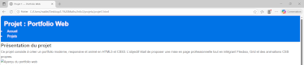
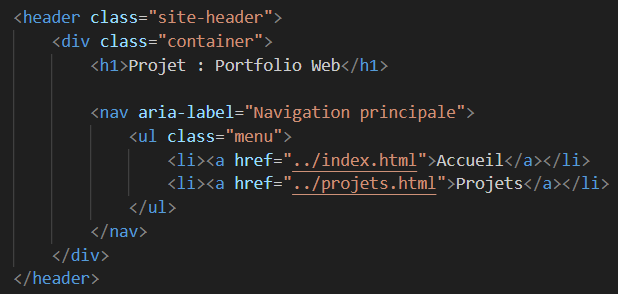
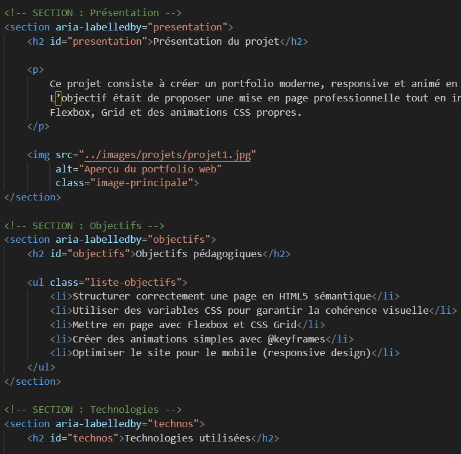

Présentation du projet
Ce projet consiste à créer un portfolio moderne, responsive et animé en HTML5 et CSS3. L’objectif était de proposer une mise en page professionnelle tout en intégrant Flexbox, Grid et des animations CSS propres.

Objectifs pédagogiques
- Structurer correctement une page en HTML5 sémantique
- Utiliser des variables CSS pour garantir la cohérence visuelle
- Mettre en page avec Flexbox et CSS Grid
- Créer des animations simples avec @keyframes
- Optimiser le site pour le mobile (responsive design)
Technologies utilisées
HTML5
CSS3
Figma (pour le design)
Galerie du projet



Conclusion
Ce projet m’a permis de mettre en pratique les différents aspects de l’intégration web moderne, du design responsive à l’utilisation de variables CSS.
Retour aux projets